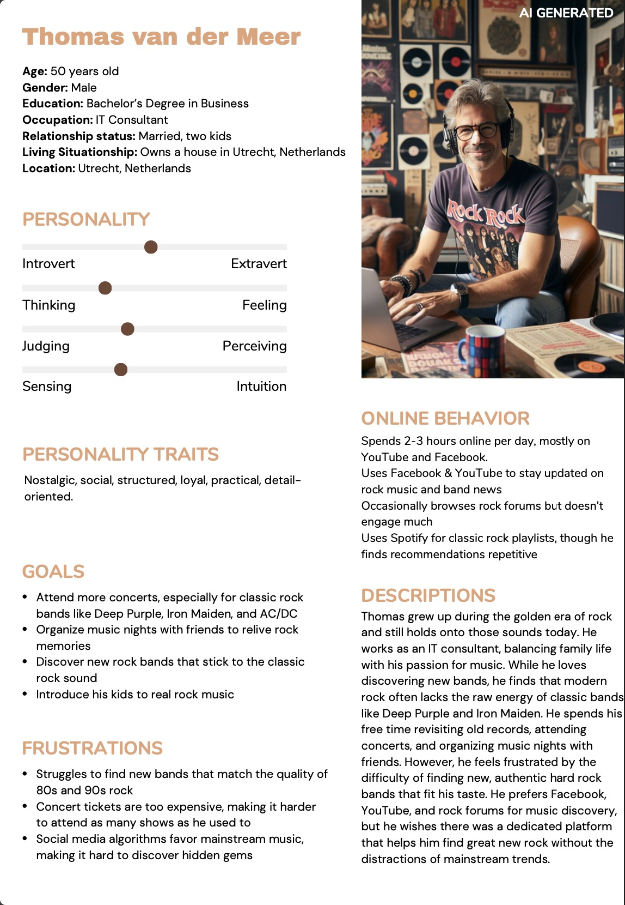
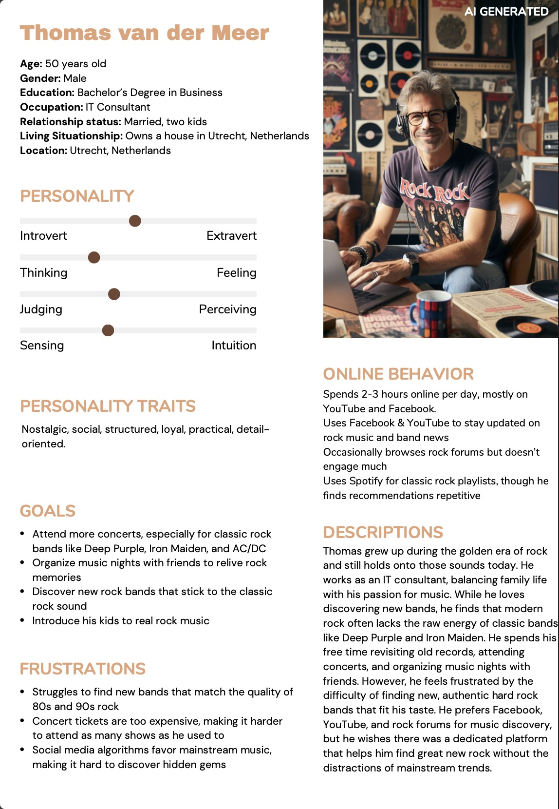

Team

Emma Damen
233210
Next Generation Rising

Adrian Ivancak
230404
Fuelled by Passion

Evi Danen
234597
Make Some Noise

Tess van Dalsen
232642
Rock Without Limits
Dimitar Marinov
230915
One Stage, One Community
Production
Tone of voice: Bold, energetic, and passionate.
The platform is all about making noise, so the language should be powerful, confident, and high-energy. We speak directly to rock fans, making them feel part of a real community.
Product:
Our brand is a community-driven platform that helps musicians and fans connect, organize, and participate in Hard Rock jam sessions and events. The brand aims to fill gaps in the Hard Rock scene by making it easier for people ages 25-54 to find and attend live music experiences despite financial, time, and location constraints.
Key elements:
Jam Session Platform – A website where people can organize small jam sessions and discover upcoming events.
Venue Partnerships – Collaborations with small venues across the Netherlands to host jam sessions with an affordable entry fee.
Accessibility-Focused – Events planned with affordability, time flexibility, and location in mind to fit into busy lifestyles.
Visual Identity
Purple – Often associated with mystery, creativity, and individuality, it fits well with the alternative and non-mainstream feel of rock music. Bands like Deep Purple even built their identity around it!
Orange – A high-energy color that stands for excitement, enthusiasm, and warmth—perfect for capturing the thrill of live music and rock culture.
Black – A classic rock color, representing power, rebellion, and edge. It gives a sleek, strong contrast and makes everything feel bold and intense.
Logo- We kicked things off with a logo that had a bit too much going on — cool idea, but it just wasn’t hitting right. It was hard to read and didn’t match the loud, clean vibe we were going for. So, we stripped it back and made it bold. The guitar? Still there — now cleverly worked into the name as the ‘&’ in Loud & Found. After that, we tried throwing it in a patterned background, but it made things a little messy. So now, we’ve got two versions: one clean, one with the pattern — ready to rock in different situations.
Website design justification
The Loud and Found website was designed to reflect our brand’s identity as a bold, creative, and community-driven platform for hard rock enthusiasts. Every element is intentional, with a focus on usability, engagement, and emotional connection.
Visual consistency
We use a fixed background image that stays in place while scrolling. This strengthens the immersive experience and evokes the underground, raw energy of live music environments — a key feeling we want to communicate.
The colour palette of purple, orange and black (with various shades) is used throughout the website. These colours represent creativity, passion, power, and clarity, respectively. The consistent use of our corporate colours not only builds brand recognition but also guides user focus and evokes the vibrant atmosphere of the jam session community.
Navigation and layout
Our layout begins with a centered logo at the top, ensuring immediate brand recognition. Below it, we placed a simple, horizontal navigation bar with four clear options: Home, Events, Contact, and Create a Jam Session. This minimal approach supports intuitive exploration.
To enhance responsiveness and interactivity, we incorporated hover effects on all navigation items. This microinteraction gives users visual feedback and improves the site’s overall usability and modern feel.
The corporate page is accessed via a dropdown menu located in the top-right corner. This keeps core brand content (team, production, marketing, management, appendix) available without distracting regular users, using progressive disclosure to maintain a clean interface.
Additionally, we placed Instagram and Facebook icons on the right side of the main navigation bar, making social platforms easily accessible and encouraging community engagement beyond the website.
Importantly, this header is consistent across all pages, improving navigation and strengthening brand continuity, with the exception of the corporate page, where a separate structure is more functional for internal needs.
Homepage
The homepage opens with a large hero section that welcomes users and invites them to explore the community with a clear call-to-action button linking to the Events page. This aligns with common UX patterns, capturing attention and guiding action right away.
The following “About Loud and Found” section presents our mission, vision, and values in brief, with links to the corporate page for deeper reading. This split approach keeps the homepage concise while still enabling full transparency for users who want more context.
The “Upcoming Events” section uses a carousel box format to display events with images, titles, dates, and a “See More” button. Carousels are familiar and effective UI elements that allow users to view multiple content units in a limited space, improving usability and maintaining a clean look.
Finally, the “Join the Community” section integrates our latest Instagram posts in a responsive, clickable format. It ends with a “Follow Us” button, bridging the website with our real-time social presence and encouraging deeper engagement.
Events page
The Events page begins with a brief instruction box, making the platform approachable for new users. Below it, events are shown in a responsive grid layout with square thumbnails. The event name is always visible, and hovering over the image reveals more details (date, time, place), enhancing interactivity while keeping the layout tidy.
Clicking an event image opens the related WhatsApp group, enabling instant user participation. This design supports a seamless transition from browsing to community interaction, which is at the core of our platform’s purpose.
Contact and Create Jam Session page
The Contact page is kept intentionally simple, with a short form that lowers the barrier for communication. Fewer fields lead to higher completion rates, and the design prioritizes function over form to avoid distractions.
The Create a Jam Session page includes a full step-by-step guide with tips, followed by a comprehensive form. This empowers users to take initiative and participate directly in the platform, reinforcing our mission of building a community by and for the people in it.
Final Justification
The design choices across the Loud and Found website support a strong, user-focused experience while staying true to the values of our brand. We prioritized simplicity, responsiveness, and emotional resonance, ensuring that users feel welcomed, inspired, and encouraged to participate. All pages are tied together through consistent colours, a shared visual language, and clearly structured navigation — forming a site that’s not only aesthetically bold but also functionally effective.
Testing Report
To test the effectiveness and usability of our Loud & Found website, we conducted user testing. We used both remote and in-person testing sessions to get a well-rounded view of how users interact with the site. Participants used different devices (desktop computers, iPhones, and Android phones) so we could see how the site performs across platforms. The tests were guided using realistic scenarios to mimic how someone would actually use the site. We collected recordings, listened to user comments in real time, and followed up with short interviews after the tasks to understand their thoughts and reactions. this testing was held with participants that reflect our target audience:
- One Creative Business student (age 21) with knowledge of branding and design.
- Two male rock fans (ages 24 and 26) who regularly attend music events.
- Additional feedback was gathered by sharing the website with our original interviewees to see our final product.
Goals
- Test if users can navigate the website easily and complete key actions.
- Check if the site's design and messaging reflect our brand identity.
- Identify any pain points or confusing elements.
Testing tasks
- Try to find a jam session and join the WhatsApp group.
- Try to contact the team using the form.
- Try to create your own jam session.
Key findings
- User went to the “create jam session’’ page instead of the events page to find a jam session.
- There was no confirmation after submitting the contact form. (User was unsure whether their message was successfully sent due to the lack of confirmation.)
- Navigation on the mobile. While navigation worked fine on desktop, one user noted that the experience on a phone was less intuitive, especially when switching between “create”, “explore”, and “contact”.
- Lack of explanatory text for “Create jam session” page. While users understood the forms of creating a jam, they expected a short explanation afterwards about what happens after the submission. Next to that, the text of “Create jam session” in another colour to make it more stand out
Improving feedback
- Change the name ‘’events’’ in navigation to ‘’Jam Zone’’ as it is already mentioned like that at the top of the page
- Add conformation after submitting the contact form.
- Make sure that the navigation also works on mobile format.
- Add more information on the ‘’create Jam Session’’ page.
Positive feedback
- Overall navigation and design were user-friendly. Users could complete all tasks without any help and felt confident navigating the website.
- Nice tone and style of the website. Participants of the user testing described it as energetic and clearly targeting a specific community of hard rock fans.
- Jam session overview was clear, and WhatsApp integration was appreciated. The ability to immediately find a session and join a community chat was very appealing for the participants. It made the website feel active and connected.
Suggested improvements
- Add confirmation feedback for form submissions. A simple message will help reassure users that their message was sent.
- Add short instructions on the “Create Jam Session” page. A brief introduction before or after submitting their form to create a jam session would improve clarity and guide new users.
- Improve mobile navigation. Review layout on mobile devices, especially for menu items.
- Consider implementing basic filters on the jam session page. If possible, allow users to filter jam sessions by city or date. This helps make the experience more personalized and functional.
Conclusion
Overall, our website has a solid foundation when it comes to branding, design, and how it functions. Users were able to complete the main tasks on their own and generally enjoyed the experience, especially the social and community-focused features like the jam sessions and WhatsApp integration.
That said, there are a few areas that could use improvement to make the site even more user-friendly. Things like clearer navigation labels, better feedback after form submissions, and smoother mobile navigation would go a long way in making the experience feel more polished and intuitive.
The suggestions we’ve made are based on real user behaviour and follow good UX practices. Making these changes will help the site feel more complete and make it an even stronger space for rock fans and musicians to connect and collaborate.
Content
Vision:
Loud & Found is a global community where hard rock fans connect, share their passion, and discover powerful music. Turning strangers into friends through the sound that unites us.
Mission:
"Loud & Found is dedicated to bringing hard rock fans together through shared experiences, deep connections, and the discovery of electrifying music. Whether through live events, curated playlists, or real conversations, we build a home for those who live loud and love rock."
Values:
Next Generation Rising – Hard rock isn’t just about the past; It’s about the future. We bridge the gap between generations, making it easy for longtime fans to discover fresh, authentic artists who carry the same energy and passion that first made them fall in love with the genre. At the same time, we create an exciting entry point for new fans, connecting them with both legendary influences and rising talent. By bringing these audiences together, we ensure that hard rock continues to grow, evolve, and stay as powerful as ever.
Fuelled by Passion – Hard rock music runs through the veins of all hard-rock lovers. They all gain power and draw inspiration from the music that connects them. Our newly created website is an online space solely dedicated to reigniting that good old passion for one of the most revolutionary and expressive genres in the history of music. This digital platform will allow many curious hard-rock fans to dive into the dynamic world of the current hard-rock bands and become a part of one vibrant community of people who share the same passion and whose heartbeats beat in unison with the thunderous rhythm of the same relentless hard-rock drums. Fuelled by passion, we put our best efforts into bringing together the rising stars of today’s hard-rock scene with some of the most legendary hard-rock icons, ensuring all hard-rock lovers that the spirit of hard-rock music will never fade away!
Make Some Noise is all about embracing the raw energy and confident attitude of hard rock. Our platform is a space where fans and artists can be loud, bold, and completely be themselves. We believe that rock is more than just music – it’s a movement, a means of self-expression, and a way to challenge the status quo. For this reason, we urge supporters to speak up, express their enthusiasm, and help up-and-coming artists. Too often, rising artists struggle to be heard in an industry that favours mainstream trends, but here every voice matters. Whether it’s discovering an underground band, debating the best live performances, or simply sharing the music that fuels them, our community is built on pure passion. There are no limits, no expectations-just real music, real fans, and a place where rock thrives.
Rock Without Limits – For us, hard rock isn’t just a genre—it’s a way of thinking. It means tearing down the walls, breaking the rules, and making space for everyone who feels the music deep in their soul. No matter where you’re from, what language you speak, or how you got into rock, you belong here. "Rock Without Limits" is about the freedom to be yourself, to express your truth, and to connect with others who feel that same energy. We’re building a space where borders don’t matter, and where anyone with a passion for loud guitars, raw vocals, and powerful emotion can feel at home. It’s not just about listening to rock—it’s about living it, with no limits, no judgement, and no holding back.
One Stage, One Community – Whether you’re a lifelong fan searching for the next big band or an up-and-coming artist ready to make some noise, we’ve built a space where hard rock thrives. Here, you can explore new music, connect with like-minded fans, and gain exposure as an artist, all in one place. From discovering live events and exclusive content to showcasing your own work, we make it easier than ever to be part of a passionate, united hard rock community.
 


Marketing
Loud & Found
Loud & Found is a community-driven online platform that helps musicians and fans connect, organize, and participate in Hard Rock jam sessions and events. Our brand aims to fill gaps in the Hard Rock scene by making it easier for people aged between 25-54 to find and attend live music experiences despite financial reservations, time limitations and location constraints.
Target audience, persona
For our marketing strategy, we initially focused on a broad audience of hard rock fans aged 25-54. Desk research shows that rock music appeals widely to this demographic, with 33% of fans aged 35-54 and a strong presence among Gen X and Millennials (Inside Radio, 2019).
Hard rock fans are passionate and engaged, often attending concerts, collecting music, and actively following their favourite bands. While some enjoy live events, others prefer streaming music or discussing it on online forums and social media. Understanding these behaviours will help us design a website that caters to their needs, offering a mix of music streaming, exclusive content, and community engagement (AmplifyXL, n.d.).
After receiving our concept and marketing approach, we decided to narrow it down to a more focused segment: younger rock fans aged 22 to 30. This group is digitally active, passionate about discovering new music, and prefers intimate live gigs over major festivals.
They typically spend several hours a day on platforms like Instagram, Spotify, and music forums, where they follow bands, watch concert clips, and engage in music related content. They’re drawn to underground and emerging artists, often feeling overlooked by mainstream algorithms that promote big-name acts.
Our content and campaigns are designed to speak directly to this audience, spontaneous, open-minded, and eager to connect with the rock scene in an authentic way. By targeting this core group, we aim to build a strong, engaged community that reflects the values and energy of Loud & Found.
About our campaign
The look and feel of the Loud & Found campaign is bold, raw and energetic. Fully inspired by the hard rock culture it represents. Visually, the campaign uses a strong mix of gritty textures, high-contrast photography, and live music imagery that captures the atmosphere of jam sessions and underground shows. Our color palette supports this vibe: purple symbolizes creativity and individuality, orange brings energy and excitement, and black adds power, edge, and intensity. Together, these visual elements create a distinctive identity that reflects the rebellious spirit of rock.
This campaign is all about building excitement around the Loud & Found platform, a space where rock fans and musicians can come together, discover new talent, and take part in jam sessions across the Netherlands. The message we want to share is: “You don’t need a stadium to feel music, you just need a community.” Loud & Found creates space for connection, discovery, and hard rock moments that matter.
To match this message, we use a tone of voice that is bold, energetic, and full of passion. We speak in a way that feels strong and confident, just like the music we stand for. Instead of talking to our audience, we talk with them. We want rock fans to feel like they’re part of something real and exciting.
Whether we’re sharing a jam session, a giveaway, or just a Monday mood, we always keep it loud, direct, and full of energy.
Objectives
Reach objective: The goal of the 4-week ‘Loud & Found’ marketing campaign is to reach at least 3,000 unique users across Facebook and Instagram by April 11 through engaging content and strategic hashtag use.
Affect: The campaign will inspire excitement and community through high-energy content, driving engagement and brand loyalty over four weeks, ending April 11th.
Response: The goal is to gain at least 200 new followers and generating 100+ interactions (comments, shares, hashtag uses) across Facebook and Instagram by April 11th.
Media tactics: Our goal is to achieve a total of 5000 reach across both platforms, by April 11th (Statista, 2025).
Channels / Platforms
For our campaign, we used Instagram and Facebook as our main platforms. These platforms are widely used by our target audience of hard rock fans aged 25-54. Research from the Pew Research Center (2024) shows that 78% of our age group use Facebook, while 66% use Instagram, making them ideal platforms to reach and engage potential fans. Additionally, research highlights the importance of social media and (video) content in reaching this demographic.
We posted three times a week on both platforms and added stories 3-4 times per week to boost visibility and engagement. This strategy directly supported our communication and media objectives. By posting consistently and using relevant hashtags, we aimed to reach at least 3,000 unique users before April 11th. Stories helped extend reach beyond followers, increasing exposure.
Our posts were designed to create excitement and a sense of community. We used high-energy visuals, real-life content (like festivals and jam sessions), and interactive elements such as polls and questions to connect emotionally with our audience.
We encouraged followers to interact with our content by liking, commenting, tagging friends, and following the page. Through giveaways, quizzes, and participation-based stories, we aimed to generate at least 200 new followers and 100+ interactions across both platforms.
Link to Content Calendar
Posts with justification
Countdown posts and stories justification
The countdown posts and stories' whole purpose is to build buzz, excitement and more momentum around the launch of the website. The task was to follow the content strategy behind the classic countdown content concept that would help us build anticipation and an emotional investment to a tool that is yet to be created. The feeling of suspense we are trying to create with these posts and stories is meant to make the users even more passionate about the launch of the website and help us reach our marketing objectives. The community hype we are aiming to create through the countdowns directly supports the 'Affect' objective, while the growing curiosity of the users about the website's launch attracts consistent user interaction in the form of regular page visits, actively supporting the 'Reach' objective. Lastly, the consistently captivating suspenseful style of this kind of content increases the audience's desire to like, share and leave their comments about the upcoming launch. That same user engagement contributes to the 'Response' goal of boosting post interactions and increasing the follower count number to at least 200 by the 11th of April.
Posts / Reels (clickable)
Stories (clickable, story highlights)
Justification of the Giveaway Reel: Reel
This giveaway reel was strategically uploaded to boost our social media platforms engagement, reward our dedicated followers, and potentially attract new members who would like to follow the page in exchange for the chance of winning a free concert ticket. By introducing the thrill of some playful mystery, we tried to create curiosity and buzz around our brand while prompting the users to interact with us more by liking, following, and using our personal hashtags. The reel's purpose is not just about giving some kind of a random reward away. It is also about creating memorable brand experiences that appeal to our target audience and fuels their passion for the riff-heavy tune of hard rock music. And what better than offering them the gift of creating their own unforgettable rockout memories?
This giveaway type of post serves the role of attention-grabbing sweet value offer that excites the users and makes them feel more encouraged to interact with our content.
This type of content posting helps us to reinforce our identity as a fun, energetic, and fan-focused platform.
Justification for the “Going to a concert with us” posts:
Tess post
Emma post
The “Going to a concert with us” posts allow followers to step into the shoes of our lovely team members Tess & Emma, and to almost feel like they are attending the live events together with them. It offers each user a personalized, authentic, first-person glimpse into the exciting point of view of the regular concert visitor and helps them identify the emotional value of going to a live music event. Helping our users gain a better understanding of what the hype around joining live concerts is all about will most likely encourage them to attend a live event of their own in the near future.
By sharing wholesome content from different stages of the experience, starting from the pre-concert moments to the exact moment when the crowd's excitement peaks thanks to the amazing live performances, we foster emotional resonance among the audience that directly benefits the ‘Affect’ objective. At the same time, this engaging content that is driven by true, meaningful life events in certain individuals' lives, encourages users to not only revisit our page regularly but to also create their own meaningful, fun memories by following the same example. The consistent audience interaction helps us in efforts to achieve the ‘Reach’ objective of the marketing campaign. These intriguing posts establish a more personal connection with the people and also foster euphoric, positive associations around the Loud & Found brand.
Our Brands's Goal Behind the Stories and the posts with an open question
The ultimate intention behind the creation of these interactive stories/posts was to find a fun, engaging way to connect with our community of hard rock fans and learn more about them not just as hard rock lovers, but also as individuals. We invited each user to share more about themselves by revealing which rock legends they resonate with the most and would love to see them live. We also gave them a fun non-stressful test to see if their musical knowledge is up to par and tried to put them in interesting imaginary scenarios as we aimed to gain useful insights about their musical preferences based on the answers that we would receive from them.
These stories and posts were crafted to not only entertain our followers and keep them engaged with our page, but to also spark cool conversations and more meaningful interactions between the brand and the users. One of our main marketing objectives was to foster a sense of community among the users and to trigger a mutually beneficial social exploration because the more we understand our audience, the more capable we will become of creating unique brand features and experiences that truly resonate with them.
About the “Get a taste of one of our jam sessions” post (link)
Giving the people a sneak peek at what a regular jam session looks like is meant to light up a spark of excitement and inspire curiosity around the thought of attending such an event. Such a post solidifies the whole purpose of our brand's website, and it poses as a warm invitation to use the website for its intended use when it gets released.
The sneak peek post taps into the passion for music that a lot of people might have and helps us connect with these same music lovers on a more personal level, which definitely helps us towards the end goal of building a community of dedicated fans. The exclusive content featured in this simple post is also highly shareable and engaging, which are two key drivers for expanding your online audience, so this post also supports the goal of reaching 3,000 unique users, generating 100+ unique interactions as well as gaining 200 new followers by April 11.
Justification for the “Welcome to Loud & Found” video showcase of the website (link)
The video showcasing of the Loud & Found website directly supports the campaign's ‘Reach’ objective by using highly visually stimulating branded content that captures the audience's attention and seeks to increase visibility across our chosen social media platforms. The post's content taps into the music community's built-up excitement around live music experiences by effectively sparking curiosity and encouraging likes, comments and shares, which is more than helpful when it comes to the goal of reaching 3,000 unique users because it boosts the visibility of our page in the algorithm. The emotionally charged description of the post also serves as an inspiration to the other young entrepreneurs such as us by giving them a glimpse of what this whole project meant to our team and what the development process of the website's final version was like. The message to “Stay loud. Stay found.” fosters a sense of belonging that reinforces the ‘Affect’ goal that we had during this campaign. Publicly inviting users to join the community and to explore the possibility of going to the live jam sessions inevitably prompts user interaction and helps the completion of the ‘Response’ objective that is all about gaining followers and boosting post engagement. Overall, the post acts as both a celebration of the brand's journey to the long-awaited launch and a call-to-action encouraging the Loud & Found audience to start using our new creation as soon as possible.
Justification for the “Ready for the weekend” post (link)
This post was effective because it refers to well-known rock legends to grab attention and connect emotionally with our audience. It encouraged interaction by asking the audience this casual question, supported our response goal, and fit our bold, energetic tone. Posting on a Friday also aligned with our strategy to boost engagement before the weekend.
Metrics of the campaign
Instagram
Over the past month, our Instagram campaign reached 779 accounts and gained 1,994 views across all content. We created a mix of posts, reels, and stories to keep the content fresh and engaging. Posts made up the majority of the interactions (87.4%), followed by reels and stories.
Some of our top-performing content included:
- A countdown post to the website launch (404 views)
- A mystery giveaway reel (313 views)
- A fun POV concert post (119 views)
In total, the account saw 240 profile visits and 95 interactions, with 94.7% of those coming from followers. This shows that our content really resonated with the community we’ve started building.
The campaign helped us grow our following to 55 people, and more importantly, it gave us valuable insight into what kind of content gets people excited and engaged.
Facebook
While Instagram was our strongest platform in this campaign, Facebook didn’t perform as well. We reached only 13 people and gained 3 new followers in the last 28 days. Engagement remained low, and we didn’t see much interaction with the posts.
One of the reasons for this was that our Facebook page wasn’t set to professional mode until the third week of the campaign. This likely affected our visibility and limited how well the content reached users. However, even with that fixed, it became clear that Facebook was not the right choice for us and that it isn't where our main audience hangs out. Our community is more active on Instagram.
Learning points and takebacks
This campaign gave us some valuable lessons about what it takes to bring a strategy to life. While we had a strong concept and clear planning, there were a few things we didn’t expect. For example, we forgot to set our Facebook page to professional mode until the third week, which meant we missed out on important analytics and reach early on. Even after fixing it, we noticed that Facebook wasn’t the best platform for our audience, who were much more active and engaged on Instagram. That insight helped us focus our energy where it made the most impact.
We also experimented along the way. Halfway through the campaign, we decided to change our posting times from morning to evening to see if it would affect engagement, and it did. Right away, we noticed that more people were liking and interacting with our posts. That small shift showed us how important timing can be when trying to reach the right audience.
Finally, we learned that interactive and community-focused content like countdowns, giveaways, and mood check-ins-performed best. It proved that even when the tone is bold and loud, people connect most with content that feels fun and relatable. Most importantly, we learned to stay flexible and adjust quickly when things didn’t go as expected. That adaptability was key to keeping our message strong and our audience involved.
Future Planning
Looking back at the campaign, we gained valuable insights into what worked and what we would do differently. One of the key learning points was the importance of choosing the right platforms. Instagram clearly matched our audience’s behavior and delivered the best results. In contrast, Facebook underperformed, partly due to a delay in switching to professional mode, but also because our younger target group (22-30) is simply less active there. In future campaigns, we would focus entirely on Instagram and begin testing TikTok as a secondary platform, as its short-form, high-energy style fits perfectly with the content that resonated most with our audience.
Another key insight came from adjusting our posting schedule. Midway through the campaign, we moved our posts from mornings to evenings and immediately saw better engagement. In future planning, we would stick to evening time slots (6-9 PM) and align our content more closely with audience behavior.
If the campaign continues, our content strategy would focus on:
- Reels and TikToks: Jam sessions clips, “POV” content, artist spotlights
- Stories 3-4x a week: Polls, quizzes, countdowns, and interactive posts
- Behind the scenes & community focused content: Fan highlights, local artist, and UGC
- Event related posts: Pre-launch teasers and post-event highlights
Overall, we’ve learned that flexibility, platform choice, and timing are crucial, and if we continue, we’ll build on those lessons to grow a more active and engaged rock community.
Link to future content calendar: Future Contentplanner Social media Loud&Found
References
https://www.insideradio.com/rock-is-on-a-roll-as-ratings-and-music-consumption-show-growth/article_d0ba997a-aead-11e9-aad8-bf34f42901be.html
https://amplifyxl.com/target-audience-for-rock-music/
https://www.statista.com/statistics/1546136/us-top-social-media-video-platforms-by-age/
https://www.pewresearch.org/internet/fact-sheet/social-media/
Management
Interviews can be found here
Our final lean canvas
Other canvas can be found in appendix and this link: Canva
Justification lean canvas
Product
Our main product is an easy-to-use website where hard rock fans can discover new jam sessions, connect with upcoming artists and fans, and find all the information they need in one place. The platform focuses on organizing small, affordable jam sessions across different cities in the Netherlands, making it more accessible and less time-consuming for people to attend. Based on interviews, we found that many fans struggle with high ticket prices, lack of information, and long travel times — our concept directly responds to those issues. The website also offers opportunities for fans to help out at events in exchange for free entry, which fits our community-driven brand identity. Additionally, it provides a space for new artists to gain exposure and connect with passionate audiences, perfectly aligning with our mission to support the next generation of hard rock talent.
Problem
1. Lack of free time
One of the biggest reasons people stop going to live events with others is simply a lack of time. Between school, work, and other responsibilities, it’s hard to commit to long jam sessions or travel far just to meet up. Our product solves this by keeping things short, local, and easy to join. We focus on smaller jam sessions with people in close range, so there’s no long commute. Plus, each session lasts a maximum of 1.5 hours—just enough to connect and play without taking over your whole evening. It’s a simple way to keep music in your life, even when things get busy.
2. Lack of information
A big issue for music lovers and aspiring musicians is the lack of clear, centralized information. It’s often hard to find out when and where jam sessions are happening or even discover new bands in your area. Our website solves this by putting everything in one place. From upcoming jam sessions and locations to info on local bands and artists, it’s all easily accessible and regularly updated. This makes it way more convenient to stay in the loop, plan, and connect with the music scene without having to dig through social media or random websites.
3. Money (prices of tickets)
High ticket prices often stop people from going to live music events, especially students or anyone on a tight budget. We want to change that by making jam sessions way more affordable. Through our website, you can buy tickets at a low price—or sometimes even attend for free. We also offer a cool option where you can help during the event, like scanning tickets or setting up, and in return, you get in for free. The people we interviewed really liked this idea, and it creates a win-win: you save money and still get to enjoy live music.
4. Transportation
Transportation is a big issue when it comes to live events. Most concerts happen in large venues that are far away and getting there isn’t always easy—especially if you don’t have a car or if the event ends too late for you to catch the train home. That’s something we really wanted to fix. With our website, you can find jam sessions happening nearby, so you won’t have to travel far or worry about how to get home. It’s all about making live music more accessible and convenient for everyone, no matter where you live.
Solution
1. Quick and Easy Access to Discover New Artists and Jam Sessions
Our website will provide an easy-to-navigate platform for users to find new artists and jam sessions near them.
This centralizes all the information you need, making it simple to explore upcoming events, discover fresh talent, and stay connected to the hard rock community.
2. Clear Information About New Events and Artists
We’ll provide up-to-date, detailed information about jam sessions, performances, and new artists—all in one place.
This eliminates the hassle of searching through different platforms or social media for event details, ensuring you never miss an opportunity to see your favourite artists or discover new ones.
3. Affordable Jam Sessions with Low Fees
Our jam sessions will have a small, affordable ticket price, and some sessions will even be free.
We believe that live music should be accessible to everyone. By keeping costs low, we make it easier for fans and musicians to connect without breaking the bank.
4. Jam Sessions in Multiple Cities Across the Netherlands
Our jam sessions will take place in various cities across the Netherlands, making it easier for people to attend without extensive travel.
We want to make live music accessible to a wider audience, so by holding events in different locations, attendees won’t have to travel far, ensuring convenience and greater participation.
Customer Segments
Hard Rock fans aged 25-54
Fans in this age range grew up with rock music and continue to support the genre. They’re typically Millennials and Gen X who have a strong attachment to the music and culture.
Looking for affordable, small shows
This audience prefers smaller, more affordable jam sessions or local performances over large, expensive concerts. They value a personal, closer connection with the artists.
Active in online music communities
They frequently engage with bands and fellow fans on social media platforms like Instagram, Facebook, and YouTube. They share music, attend discussions, and discover new artists online.
Passionate about discovering new music and artists
While they appreciate classic rock, they’re always on the lookout for fresh talent and new bands to follow. They enjoy both live events and streaming services to explore new sounds.
Our target audience is made up of hard rock enthusiasts aged 25-54 who are active both online and offline. They are passionate about discovering new music and value affordability, seeking smaller-scale events that connect them with likeminded fans.
Unique Value Proposition
Affordable, Localized, and Community-Driven Hard Rock Experience
We offer hard rock fans a unique, affordable, and accessible way to experience live music by focusing on smaller, intimate jam sessions in local areas, all at a low cost. Our platform brings people together, from passionate music lovers to rising stars, in an easy-to-use space that fosters a connected community of like-minded fans.
Unfair advantage
Hyperlocal, Community-Focused Jam Sessions
Our platform focuses on organizing small, local jam sessions that build strong, tight-knit communities around hard rock music. By prioritizing intimate events in specific cities, we foster a more personal experience that’s harder for larger, corporate-driven platforms to replicate.
Exclusive Access to Emerging Talent
We offer fans an exclusive, early-access opportunity to discover and connect with rising hard rock artists who may not have the resources to be showcased on bigger platforms. This gives our users a sense of being part of the next big wave in hard rock, creating a unique value that’s difficult for other platforms to mimic.
Volunteer-to-Access Model
Unlike traditional ticketing systems, we offer a volunteer-based approach where users can earn free entry to jam sessions by helping with event logistics (e.g., scanning tickets). This not only creates a unique, value-driven experience but also establishes a sense of involvement and ownership within the community.
These aspects of our brand—hyperlocal events, exclusive artist access, and the volunteer-to-access model—create an ecosystem that goes beyond what typical music platforms can offer. This combination fosters stronger connections between fans and artists, making it much harder for competitors to replicate the authentic, community-driven experience we offer.
Channels
Social Media (Instagram and Facebook)
We use Instagram and Facebook to promote upcoming jam sessions, share exclusive content, and engage with our community. These platforms allow us to reach a wide audience, from local hard rock fans to music lovers across the country. We regularly post event updates, behind-the-scenes footage, and artist spotlights to build excitement and foster engagement. Instagram Stories, posts, and Facebook Events are key tools we use to communicate and drive traffic to our website.
Word of mouth
The power of word-of-mouth marketing is invaluable for us. Our community-driven approach means fans and artists are eager to share their experiences with others. We encourage attendees to spread the word about their jam session experiences and invite others to join, creating a viral loop that amplifies our reach. Personal recommendations and social sharing are some of the most effective ways we attract new customers and build trust within the community.
Website
Our website is the central hub for all our activities, where customers can find information on upcoming events, purchase tickets, and explore artist profiles. We promote the website through social media posts, email newsletters, and partnerships with local venues. The website is also optimized for SEO, ensuring people can easily find it when searching for jam sessions, local hard rock events, or new artists.
Promotions in Local Pubs and Venues
We collaborate with local pubs and venues to promote jam sessions and drive foot traffic to our events. Flyers, posters, and digital promotions in these locations help us reach customers who are already part of the local music scene. These promotions often include QR codes linking directly to our website, making it easy for potential customers to learn more and book tickets.
Our main channels for reaching customers are social media (Instagram and Facebook), our website, word of mouth, and partnerships with local venues. Social media is our primary communication channel, where we engage directly with our audience and drive traffic to our website for ticket purchases. The website acts as the core distribution channel for information and event details, while word of mouth helps amplify the community-driven aspect of our brand. Local venue promotions ensure we tap into the local scene and make it easy for people to discover and attend jam sessions.
Key Metrics
Social Media Engagement (Instagram and Facebook Insights)
Track the engagement rates (likes, shares, comments, and clicks) on our social media posts to understand how effectively we're reaching and engaging our audience.
Social media is one of our primary channels for communication and promotion. By monitoring metrics like engagement rates, post reach, and follower growth, we can gauge the effectiveness of our marketing campaigns and understand what content resonates best with our audience.
Ticket Sales for Jam Sessions
Track the number of tickets sold (both paid and free) for each jam session, as well as the conversion rate from website visitors to ticket buyers.
This is a direct measure of how well our events are being received and how effective our website is at converting interest into action. By monitoring sales and conversions, we can assess demand and optimize our event offerings accordingly.
Website Traffic and User Behavior
They frequently engage with bands and fellow fans on social media platforms like Instagram, Facebook, and YouTube. They share music, attend discussions, and discover new artists online.
Passionate about discovering new music and artists
Measure the number of visitors to the website, page views, and time spent on key pages (event listings, artist profiles, ticket purchase).
Website traffic is a critical indicator of interest in our platform. By analysing user behaviour on the site, we can determine if our audience is finding what they need and engaging with our content. This helps us optimize the user experience, improve navigation, and increase conversion rates.
These key metrics will help us monitor and evaluate the effectiveness of our marketing efforts and overall brand performance. Social media engagement gives us an idea of how well we’re reaching and connecting with our audience. Ticket sales and website traffic provide direct insights into customer interest and behaviour, allowing us to adjust our strategies for better results.
Revenue Streams
Ticket Sales for Jam Sessions (Entry Fees)
Revenue from ticket sales, with a mix of free and low-cost entry fees for jam sessions, helps cover operational costs. The price will vary based on the size of the event, location, and artist involvement.
Offering both free and affordable tickets ensures accessibility for a wider audience. Free entry encourages higher attendance, while small fees help cover event costs without deterring attendees. Our goal is to create an easy and accessible way for fans to enjoy live music while keeping the events sustainable.
Venue Partnerships (Revenue Sharing or Rent from Bars/Pubs)
Partnering with local bars and venues to host jam sessions, where we either share a percentage of ticket sales or pay a small rent for the use of the space.
These partnerships provide us with the necessary venues to hold jam sessions without the upfront cost of renting large event spaces. In return, the venues benefit from increased foot traffic and potential sales. This mutually beneficial arrangement makes it easier for us to focus on promoting the events while venues gain from our audience.
Artist Promotion and Merchandise Sales
Revenue from artists selling merchandise (e.g., t-shirts, vinyl, etc.) at events and through our platform. We can take a small commission from sales or charge artists a flat fee for promotion.
By providing artists with a platform to sell their merchandise during jam sessions, we help them reach a dedicated audience while also generating additional revenue for our brand. This creates a win-win situation for both the artists and our platform.
Sponsorships and Brand Partnerships
Revenue from collaborating with brands that align with the hard rock culture (e.g., music equipment, lifestyle brands, beverage companies). These sponsors can pay for event visibility, exclusive content, or product placements at our jam sessions.
Sponsorships offer a sustainable revenue stream by attracting brands that are eager to engage with the hard rock audience. These partnerships help subsidize event costs and provide additional value to our community through exclusive offers or collaborations.
These revenue streams ensure a diversified and sustainable income model. By leveraging ticket sales, partnerships with local venues, and artist-related sales, we generate revenue while maintaining the affordability and accessibility of our events. Sponsorships allow us to further support our operations while adding value to both brands and our audience. Each stream is designed to support our growth while providing great experiences for hard rock fans and artists alike.
Cost Structure
Venue Costs (Renting Pubs for Jam Sessions)
Fixed cost: Renting local bars or small venues for jam sessions, which may involve a flat rental fee or revenue-sharing agreements.
The cost of renting a venue will depend on the size, location, and time of the event. This cost remains somewhat consistent but may fluctuate based on venue availability and location. We plan to negotiate favourable terms with local venues to reduce this cost while benefiting both parties through increased foot traffic.
Equipment Costs (Sound Systems, Instruments, etc.)
Variable cost: Purchasing or renting sound equipment, instruments, and other necessary gear for jam sessions.
This includes costs for microphones, amplifiers, speakers, and instruments that are needed for each event. While some equipment may be rented per event, others may require a one-time purchase. Maintenance and replacement of gear will also be part of these variable costs.
Staffing Costs (Event Staff, Volunteers)
Variable cost: Compensation for event staff, such as ticket scanners, security, and event coordinators.
These costs can fluctuate based on the size of the event and the number of staff required. We also offer a volunteer-to-access model where volunteers can help with event logistics (e.g., ticket scanning) in exchange for free entry, reducing some staffing costs.
Website Maintenance and Development
Fixed cost: Ongoing costs for hosting, maintaining, and improving the website, including domain registration and server costs.
This is a fixed cost that will remain consistent throughout the year. However, additional costs could arise if we decide to implement new features or scale up the platform.
Insurance and Licensing Fees
Fixed cost: Obtaining necessary insurance for events, as well as any music licensing fees required for live performances.
Insurance is needed to protect against potential damages or accidents during events. Licensing fees ensure that we have permission to play copyrighted music at jam sessions. These are fixed annual costs but may vary depending on the number of events held.
The cost structure consists of both fixed and variable costs that are necessary for running the jam sessions and maintaining the platform. Fixed costs like venue rentals and website maintenance provide stable, predictable expenses, while variable costs such as equipment, artist compensation, and marketing fluctuate based on the number of events and their scale. These expenses need to be carefully managed to ensure that each event remains profitable while keeping ticket prices affordable for attendees.
References
Kotler, P., & Armstrong, G. (2023). Principles of Marketing (Global ed.,19th ed.). Pearson.
Rock is on a roll as ratings and music consumption show growth. (2019, July 25). Insideradio.com. https://www.insideradio.com/rock-is-on-a-roll-as-ratings-and-music-consumption-show-growth/article_d0ba997a-aead-11e9-aad8-bf34f42901be.html
Piolo. (2025, March 17). The target audience for rock music: Who loves rock? | AMPLIFY XL. AMPLIFY XL. https://amplifyxl.com/target-audience-for-rock-music/
pewresearch. (2025, March 7). Social media fact sheet. Pew Research Center. https://www.pewresearch.org/internet/fact-sheet/social-media/
Statista. (2025, January 30). U.S. most used social video platform 2024, by age. https://www.statista.com/statistics/1546136/us-top-social-media-video-platforms-by-age/
Austin, S. (2024, May 12). The Decline of Facebook Organic Reach: What Marketers Need to know in 2025 - Marketing Scoop. Marketing Scoop. https://www.marketingscoop.com/marketing/the-decline-of-facebook-organic-reach-what-marketers-need-to-know-in-2024/?utm_source=chatgpt.com#google_vignette
Beshay, & Beshay. (2024, July 22). Americans’ social media use. Pew Research Center. https://www.pewresearch.org/internet/2024/01/31/americans-social-media-use/
Appendix
Communication Objectives
Reach objective - The goal of the 4-week ‘Loud & Found’ marketing campaign is to reach at least 3,000 unique users across Facebook and Instagram by April 11 through engaging content and strategic hashtag use. Performance will be tracked via social media analytics, ensuring we reach the 3,000-user milestone. Posting three times per week, featuring brand-exclusive content, interactive content such as quizzes giveaways, and user-generated content, will maximize visibility and engagement. According to data from Pew Research Center's 2024 Social Media Fact Sheet (Author, 2025), the most used social media platforms among U.S. adults aged 25 to 54 are: Facebook with 78% and Instagram with 66%, making them ideal platforms for increasing brand awareness. The objective must be achieved by April 11 to align with the campaign timeline (pewresearch, 2025).
Affect - The campaign will inspire excitement and community through high-energy content, driving engagement and brand loyalty over four weeks, ending April 11th. Audience sentiment will be assessed through engagement rates, comment sentiment analysis, and reactions on posts (e.g., excitement in comments, use of celebratory emojis, and positive interactions). Using high-energy visuals, storytelling content, and interactive posts, we will foster a sense of community and emotional investment. Emotional connection drives engagement, brand loyalty, and increased organic reach within the music community. This emotional impact will be cultivated over four weeks, ending April 11th, with regular content touchpoints throughout the campaign.
Response
The goal is to gain at least 200 new followers and generating 100+ interactions (comments, shares, hashtag uses) across Facebook and Instagram by April 11th. Success will be tracked through follower growth, comment counts, and hashtag activity in platform analytics. We will achieve this by encouraging user participation in giveaways, content challenges, and friend-tagging activities to boost visibility and interaction. Engagement directly correlates with brand growth, fostering a stronger community and amplifying campaign reach. The objective must be met by April 11, ensuring a measurable impact within the campaign period (Statista, 2025) (Austin, 2024).
Media Tactics - Which social media platforms will you use to promote your brand?
Our primary social media platform for promoting our brand will be Facebook and Instagram, as they are widely used by our target audience of hard rock fans aged 25-54. Research from the Pew Research Center (2024) shows that 78% of our age group use Facebook, while 66% use Instagram, making them ideal platforms to reach and engage potential fans. Additionally, research highlights the importance of social media and (video) content in reaching this demographic. Our goal is to achieve a total of 5000 reach across both platforms within six months of launch, by April 11th (Statista, 2025). Through a mix of posts and interactive content, we will build a strong online presence, encourage fan engagement, and drive them to our website. These efforts will help us create a dedicated community of hard rock fans while expanding our brand’s visibility (Beshay & Beshay, 2024) (Statista, 2025).
Control - To ensure the success of this marketing campaign, we must pay attention to some key performance indicators during the full 4-week duration such as social media engagement, viewership numbers and direct feedback from our newly gained followers. Specifically, Instagram insights will be used to track impressions, reach, engagement, and audience demographics, to help us assess whether the brand’s marketing campaign appeals to our primary target audience of international as well as all Dutch hard rock fans between the ages of 25 and 54 (Kotler & Armstrong, 2023). The primary goal is to reach 3000 users across all social media platforms of ‘Loud & Found’ and gain at least 200 followers before 11.04.2024. Achieving this target will be tracked through platform analytics. There will be weekly Instagram Insights checkups to see how the numbers are looking and if we have a shortage of followers, impressions or unique reaches. To confirm the positive progress, we will also track the number of partnerships formed and attendance at local events, providing qualitative data to complement our quantitative results.
First lean canvas

Second lean canvas

Value proposition canvas